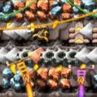

Second stage
The different parts
Designing Smelting Systems:
Smelting, the process of converting raw ores into usable materials, is a fundamental aspect of Factorio's industrial landscape. During the learning strategies stage, players experiment with different smelting setups, aiming to maximize output while minimizing resource consumption. They learn the importance of balancing input and output, optimizing furnace placement, and creating efficient layouts to establish a solid foundation for their growing factories.
Mastering Circuits:
Circuits represent a more advanced aspect of Factorio's production chain, requiring players to delve into the intricacies of electronics and automation. In this stage, players learn to design circuits that control the flow of materials, manage logistics, and optimize production. Mastering the principles of circuit networks allows players to create sophisticated systems, paving the way for more advanced and automated factories.
Blueprints:
As players progress through the learning strategies stage, they discover the power of blueprints. These predefined layouts allow for the quick replication of efficient designs, streamlining construction and expansion. Blueprinting becomes an essential skill as players plan for the scalability of their factories. Efficient layouts for various production lines, from resource extraction to final product assembly, contribute to the overall success of their industrial endeavors.
Avoiding the "Sushi" Pitfall:
One important lesson learned during this stage is to avoid the "sushi" configuration—a term used to describe inefficient and circular conveyor belt systems. Players realize the importance of designing linear and organized material flows to prevent production bottlenecks and maintain a smooth manufacturing process. Optimizing conveyor belt systems becomes a key principle in achieving efficiency in their factories.
Utilizing Multiple Machines:
In the learning strategies stage, players move beyond the mindset of a single machine for each task. They discover the benefits of using multiple machines in parallel to increase production rates. Whether it's smelting ores, crafting components, or assembling final products, the strategic use of multiple machines becomes a cornerstone of efficiency and productivity in Factorio's complex industrial landscape.